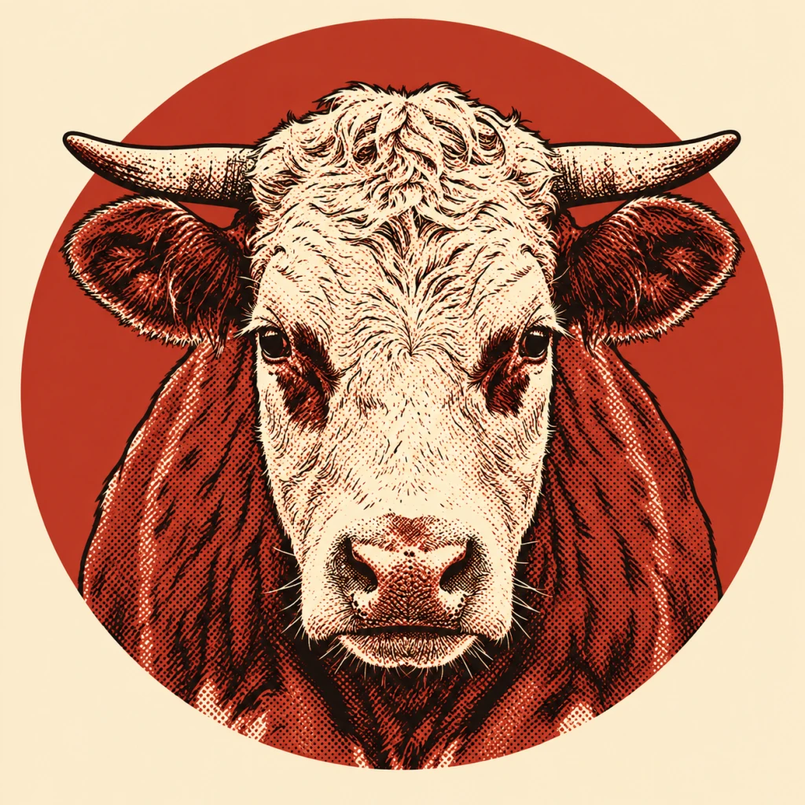
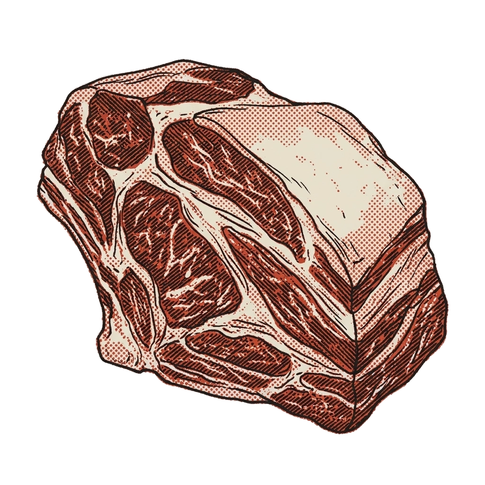
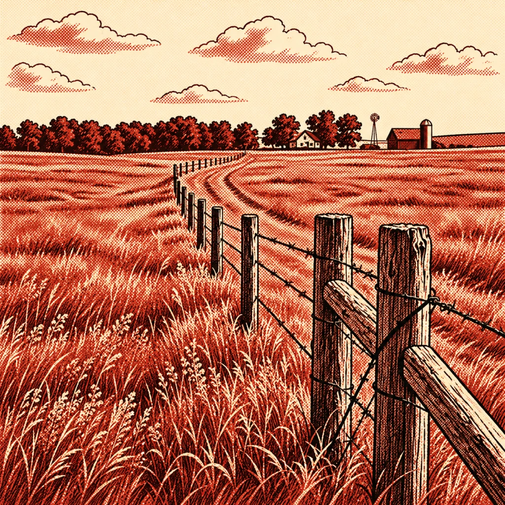
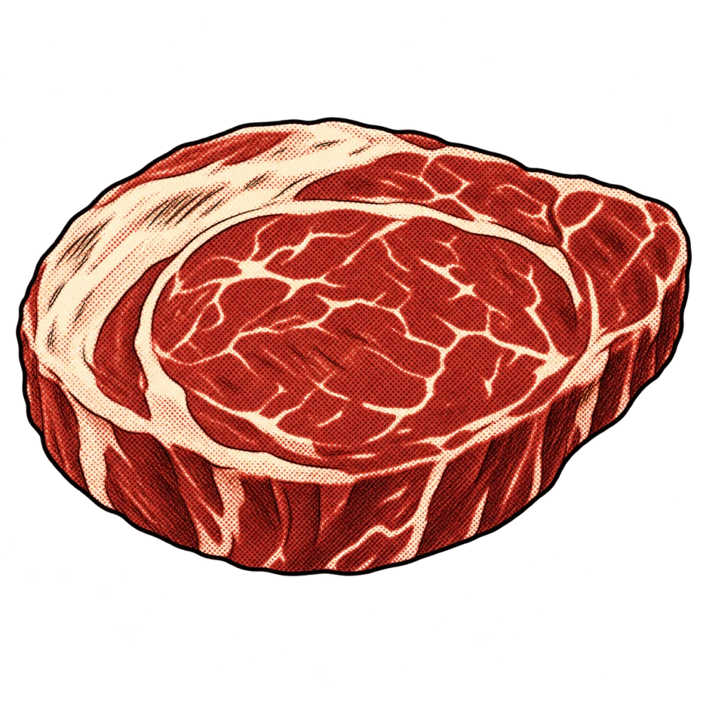
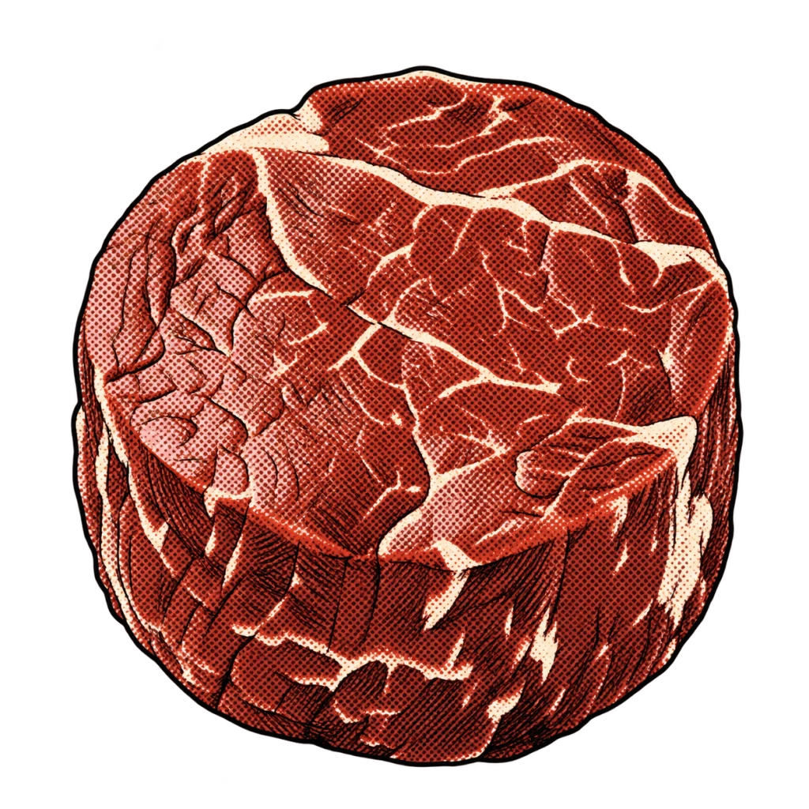
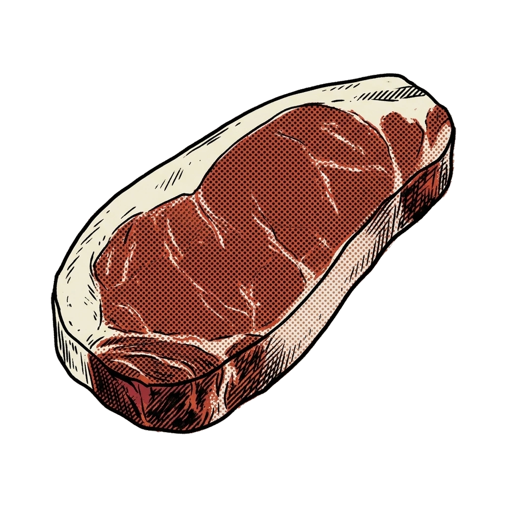
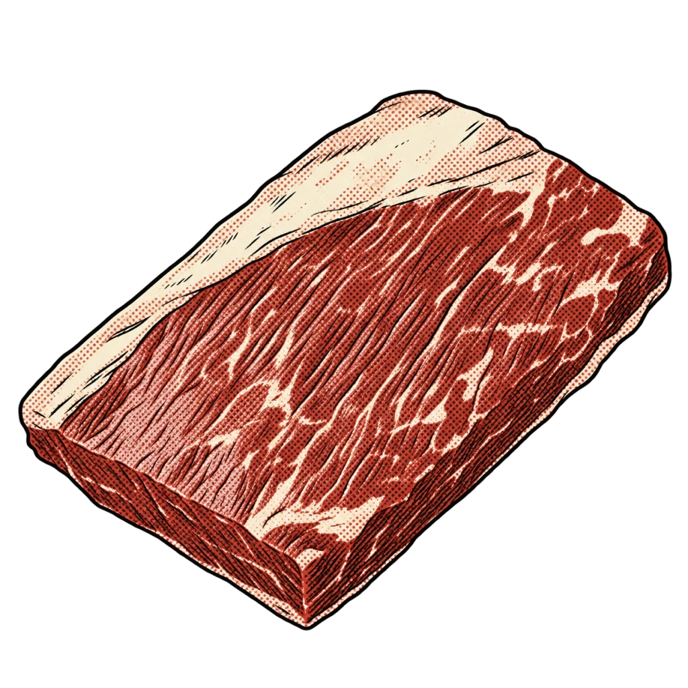
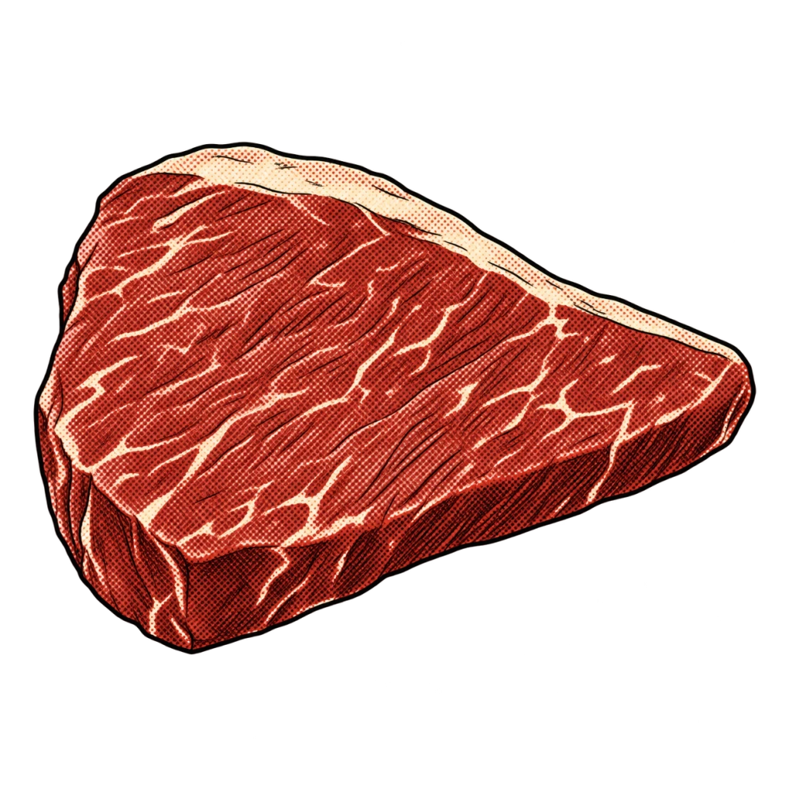

One animal. A world of difference.
The cow.
Two ways.
Every cut tells a story.
Explore the anatomy, follow the value, and see beef from a different perspective.

Start with the animal.
Two ways to divide it.
A better way to understand it.
One cow. Two maps.
Select a cut to explore its character
Anatomical illustration
Schematic regions, not cutting specifications. Translated names and price pairs require preparation and source qualifications. Hatching marks lomo, entraña and peceto as layered references.
Browse all cuts and U.S. primals
See price coverage for all 24 cuts
Coverage counts connected observations, not equivalent purchase specifications. Retained references keep their original dates. Missing prices are never substituted.
Stored Market Snapshot
Sourced observations · stored

Steak image: illustration.
View Market Data →Explore A Cut
Follow the bigger story.
Where it comes from.
What it becomes. What it’s worth.
From Animal To Table
Illustrative model · fixed inputs
Illustrative allocation of 100 teaching units · not measured carcass yield
Read the flow as a table
Cuts In Context
Sourced observations · stored
Stored retail context in USD/lb · sources, dates, and product specifications differ
Only connected USD/lb observations are plotted. Hollow dots and * mark retained references; dashed lines include a retained price. Native-only, withheld and missing prices appear in the coverage table.
Check coverage and missing prices →Read every price and qualification
Where Value Lives
Illustrative model · fixed inputs
Fixed illustrative retail-value shares · not weight, yield, or current valuation
This illustration does not use the stored cut prices.
Read the illustrative value shares
Same cow.
Different stories.
More understanding.
Editorial illustration

Popular Cuts
Sourced observations · stored
Featured cuts · retail price per lb
Cut images are illustrations, not photographs of the surveyed products. Prices retain their source, date and status.





Better data.
A richer story.
Back to the explorer ↗
Beyond the usual cuts
Cut images are illustrations, not photographs of the surveyed products. Prices retain their source, date and status.
Bone-in steak, sweetbreads, kidney, and tongue. Argentine retail listings; US prices are not yet connected.
Stored catalog references in USD/lb. Availability and conversion dates belong to the observation; they do not establish today's offer. Missing prices are never borrowed from another cut.
Sources and methods
Loading stored price evidence. The atlas does not stream live prices.